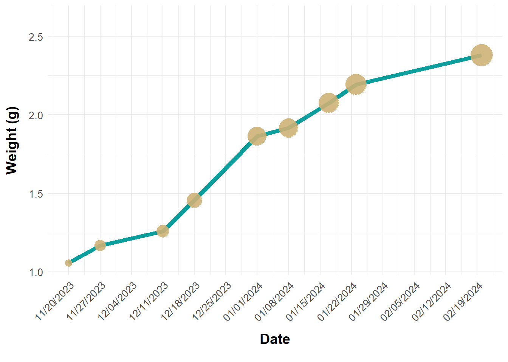
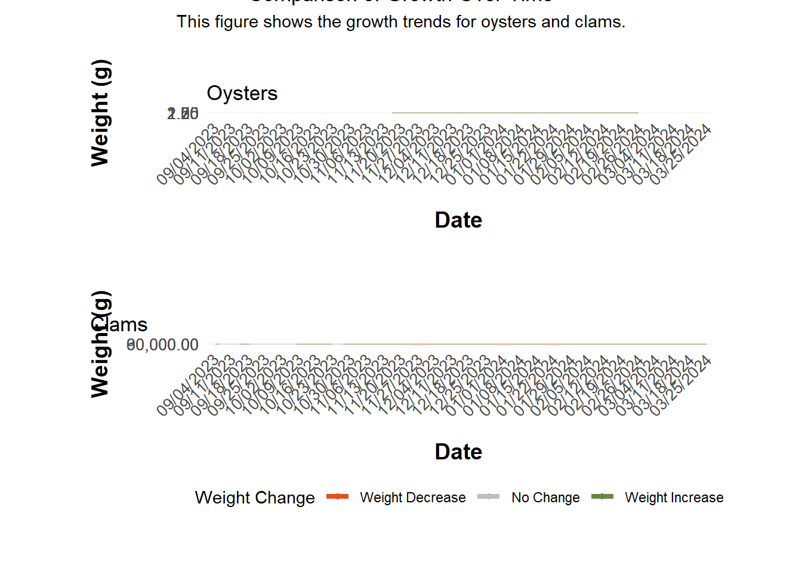

# Define a function to create named vectorscreate_units_vector <-function(names, unit) {setNames(rep(unit, length(names)), names)}# Define names and unitsnames_units <-list("cells/ml"=c("heterotrophic_bacteria","large_phytoplankton","synechococcus_population_1","synechococcus_population_2","prochlorococcus","myster_cells_events" ),"mol/L"=c("phosphate","silicate","nitrate_nitrite","ammonia" ),"ug/L"=c("chlorophyll_a" ),"mg/L"=c("dissolved_oxygen","ksf_rdo_concentration","ksf_rdo_saturation","ksf_ammonium" ),"C"=c("water_temperature","outdoor_temperature" ),"g"="weight","mS/cm"="salinity","ft"="visibility","PSU"="ksf_salinity","g/cm3"="ksf_density","PPT"="ksf_total_dissolved_solids","RFU"="ksf_chlorophyll_a_fluorescence","mph"="wind_speed_mph","in/hr"="hourly_rain_inch_hr")# Create the named vector using map and flatten from purrrunits_vector <- names_units %>%imap(create_units_vector) %>%flatten_chr()# Print the resultunits_vector
# # Function to pivot, apply units, and label the dataset# apply_units_after_pivot <- function(df, name) {# df %>%# mutate(across(-date, as.character)) %>% # Convert all columns except 'date' to character# pivot_longer(# cols = -date,# names_to = "var",# values_to = "value"# ) %>%# mutate(# unit = if_else(var %in% names(units_vector), units_vector[var], NA_character_),# dataset_name = name # Add the dataset name# )# }# Use imap_dfr to apply the function and combine using map_dfr, passing dataset namesdfs_combined <-imap_dfr(dfs, apply_units_after_pivot, .id ="dataset_name")
dfs_combined %>%select(-c(clams_color, ))
Cell Growth Changes - Water Samples Dataset Visualizes the following variables from the water sampling data set: hetero trophic, large phytoplankton, synechococcus 1, synechococcus 2, prochloroccocus, mystery cells. Shows these variables of cells per location and at different depths (like we had before in the app). Data point 2 is missing (this is correct due to an error). Unit of analysis that goes behind the name is ‘cells/ml’. Make sure metric/measurement unit is behind the name in the graphs. It visualizes 1 parameter at the time that you can select through a fold-out menu of the y-variables (like we had in the last shiny app).
get_unit <-function(var, names_units) { unit <-names(names_units)[detect_index(names_units, ~ var %in% .)]if (!is.null(unit)) {return(unit) } else {return(NA) }}weight_unit <-get_unit("weight", names_units)oyster_growth <- dfs$oyster_growth_data %>%select(-oyster_chlorophyll)# Define colors from the paletteblue_color <-"#0A9F9D"# A blue-like color from your palettedark_brown_color <-"#C18748"# A dark brown color from your palettelight_brown_color <-"#CEB175"# Plotting code using specified colorsp <-ggplot(oyster_growth, aes(x = date, y = weight)) +geom_line(color = blue_color, size =2) +# geom_text(aes(label = round(weight, 2)),# vjust = -2, # hjust = 0.65,# color = "black",# size = 3) +geom_point_interactive(aes(size = weight, color = light_brown_color, # Set the color for the pointstooltip =paste0("Weight: ", round(weight, 2), " (", weight_unit, ")"), data_id = date),alpha =0.9, # Set transparency of the pointshover_css =paste0("fill: ", dark_brown_color, ";"),show.legend =FALSE# This argument removes the size legend ) +scale_size_continuous(range =c(3, 10)) +labs(# title = "Growth of Small Oysters Over Time",x ="Date",y =paste0("Weight", " (", weight_unit, ")") ) +scale_y_continuous(limits =c(NA, max(oyster_growth$weight) *1.1)) +scale_x_date(date_labels ="%m/%d/%Y", date_breaks ="1 week") +theme_minimal() +theme(axis.text.x =element_text(angle =45, hjust =1), axis.title.x =element_text(size =14, face ="bold", margin =margin(t =10, b =10)), axis.title.y =element_text(size =14, face ="bold", margin =margin(t =10, r =10)), axis.text =element_text(size =10), # Axis labels size 10legend.position ="none"# This will remove all legends ) +scale_color_identity() # Ensure that the color values are taken literally
Warning: Using `size` aesthetic for lines was deprecated in ggplot2 3.4.0.
ℹ Please use `linewidth` instead.
p

# Convert ggplot object to ggiraphinteractive_plot <-girafe(ggobj = p)# Print the interactive plotinteractive_plot
clam_growth <- dfs$clam_growth_data
p2 <-ggplot(clam_growth, aes(x = date, y = weight, group = grouping_variable)) +geom_line(color = blue_color, size =2) +geom_point_interactive(aes(size = weight, color = light_brown_color, # Set the color for the pointstooltip =paste0("Weight: ", round(weight, 2), " (", weight_unit, ")"), data_id = date),alpha =0.9, # Set transparency of the pointshover_css =paste0("fill: ", dark_brown_color, ";"),show.legend =FALSE# This argument removes the size legend ) +scale_size_continuous(range =c(3, 10)) +labs(# title = "Growth of Small Oysters Over Time",x ="Date",y =paste0("Weight", " (", weight_unit, ")") ) +scale_y_continuous(limits =c(NA, max(clam_growth$weight) *1.1)) +scale_x_date(date_labels ="%m/%d/%Y", date_breaks ="1 week") +theme_minimal() +theme(axis.text.x =element_text(angle =45, hjust =1), axis.title.x =element_text(size =14, face ="bold", margin =margin(t =10, b =10)), axis.title.y =element_text(size =14, face ="bold", margin =margin(t =10, r =10)), axis.text =element_text(size =10), # Axis labels size 10legend.position ="none"# This will remove all legends ) +scale_color_identity()# theme(# axis.text.x = element_text(angle = 45, vjust = 0.5, hjust = 1, size = 14),# axis.text.y = element_text(margin = margin(r = 10), size = 14),# axis.title.x = element_text(margin = margin(t = 20), face = "bold", size = 18),# axis.title.y = element_text(face = "bold", margin = margin(r = 5), size = 18),# plot.title = element_text(hjust = 0.5, face = "bold", size = 22),# legend.position = "bottom",# legend.title = element_text(face = "bold", size = 14),# legend.text = element_text(size = 14),# plot.margin = margin(20, 20, 20, 20),# panel.spacing = unit(1.5, "lines")# ) # ylim(input$y_min, input$y_max)p2

# Convert ggplot object to ggiraphinteractive_plot2 <-girafe(ggobj = p2)# Print the interactive plotinteractive_plot2
# Set dynamic limits based on both datasetsdate_min <-min(min(oyster_growth$date, na.rm =TRUE), min(clam_growth$date, na.rm =TRUE))date_max <-max(max(oyster_growth$date, na.rm =TRUE), max(clam_growth$date, na.rm =TRUE))# Apply consistent scalesp <- p +scale_x_date(limits =c(date_min, date_max))
Scale for x is already present.
Adding another scale for x, which will replace the existing scale.
Scale for x is already present.
Adding another scale for x, which will replace the existing scale.
# Combine plotscombined_plot <- p / p2 # Adding shared titles and labelsfinal_plot <- combined_plot +plot_annotation(title ="",subtitle ="Shared Subtitle Information",caption ="Shared Data Source or Caption",tag_levels ='A' ) &theme(plot.title =element_text(hjust =0.5), # Center the titleplot.subtitle =element_text(hjust =0.5) # Center the subtitle )# Only show x-axis labels on the bottom plotfinal_plot <- final_plot &theme(axis.title.x =element_blank(),axis.text.x =element_text(color ="black"),axis.title.y =element_blank() )